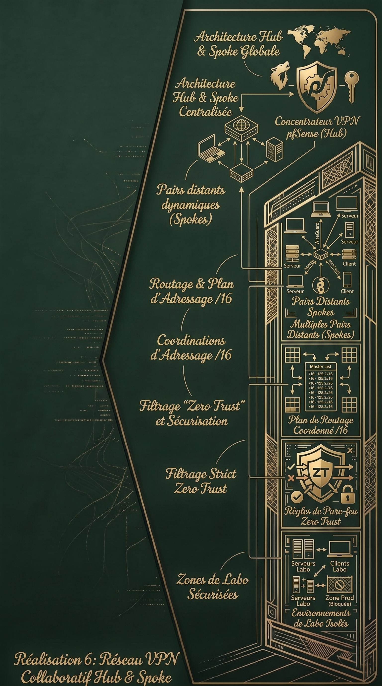

Réalisation 6 : Réseau VPN Collaboratif Hub & Spoke (Interconnexion multi-sites)
Contexte
Pour faciliter le travail collaboratif avec mes camarades tout en gardant le contrôle sur mon infrastructure, cette architecture vient remplacer un ancien tunnel de type Site-to-Site point-à-point. Le routeur frontal agit désormais comme un concentrateur central (Hub) permettant de relier de manière dynamique les infrastructures de plusieurs pairs (Spokes). L'enjeu majeur était de maintenir une approche "Zero Trust" afin de garantir un cloisonnement strict et sécurisé des flux entre les différents environnements.
Objectifs
- Déployer un réseau de transit VPN élargi, dimensionné pour accueillir jusqu'à 253 pairs.
- Configurer le Hub pour accepter des endpoints distants dynamiques, laissant les camarades initier la connexion vers le concentrateur.
- Gérer le routage des réseaux distants (via Allowed IPs) en imposant une règle d'architecture stricte : chaque pair doit déclarer des sous-réseaux uniques afin de prévenir tout conflit de routage.
- Sécuriser l'interface dédiée en bloquant formellement tout trafic vers le réseau de Production et la DMZ hébergeant les services exposés.
- Autoriser spécifiquement les communications inter-VPN et accorder un accès exclusif aux zones de test isolées du Labo (Serveurs et Clients).
Technologies utilisées
Bilan
La mise en place de cette topologie m'a permis de maîtriser les concepts de routage multi-sites et de gestion de plans d'adressage collaboratifs (coordination des sous-réseaux /16 pour éviter les chevauchements d'IP). Ce projet démontre ma capacité à ouvrir une infrastructure vers l'extérieur de manière sécurisée : la stricte hiérarchie des règles de pare-feu permet à mes camarades d'interagir librement dans les environnements de laboratoire partagés, sans jamais compromettre l'intégrité de ma zone de production.

Compétences travaillées
Gérer le patrimoine informatique
- Recenser et identifier les ressources numériques
- Mettre en place et vérifier les niveaux d’habilitation associés à un service
Développer la présence en ligne de l'organisation
- Référencer les services en ligne de l'oganisation et mesurer leur visibilité
Travailler en mode projet
- Analyser les objectifs et les modalités d'organisation d'un projet
- Planifier les activités
Mettre à disposition des utilisateurs un service informatique
- Réaliser les tests d’intégration et d’acceptation d’un service
- Déployer un service
- Accompagner les utilisateurs dans la mise en place d'un service
Organiser son développement professionnel
- Gérer son identité professionnelle
- Mettre en place son environnement d'apprentissage personnel
- Développer son projet professionnel